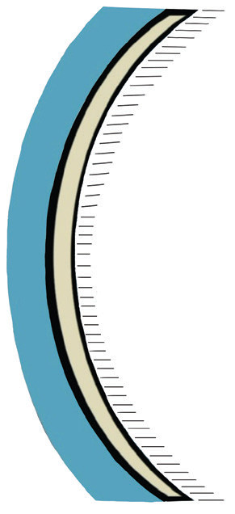
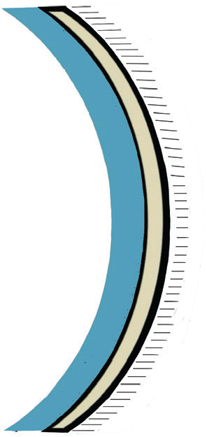

Reflection of light from curved mirrors
Have you ever observed that a car side mirror makes objects look smaller than their real size? Why does this happen? A mirror with a curved reflecting surface is called a curved mirror. It is formed by silvering a piece of curved glass. If the glass is considered a portion of a hollow sphere, then the resulting mirror is called a spherical or curved mirror. The type of curved mirror depends on which side of the curved glass is silvered. If the outer side of the curved glass is silvered such that the inner side becomes reflective, the mirror is called a concave mirror (Figure 4.20(a)). Conversely, if the inner side of the curved glass is silvered so that the outer surface becomes reflective, the mirror is called a convex mirror (Figure 4.20 (b)).


Terminologies used in spherical mirrors
Understanding spherical mirrors involves key terms such as principal axis, focal point, mirror vertex, focal length, and centre of curvature. The centre of curvature (C) is the centre of the sphere from which the mirror is derived. The principal axis is the line through the sphere’s centre that intersects the mirror at the pole (P), which is the mirror’s vertex. These concepts are essential for understanding how light reflects off curved mirrors.